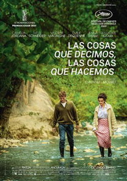

Las cosas que decimos, las cosas que hacemos
Les choses qu'on dit, les choses qu'on fait (2020) *
Francia
También conocida como:
-
"Las cosas que se dicen" (Colombia)
Duración: 122 min.
Música: Frédéric Chopin, Claude Debussy, Erik Satie, Francis Poulenc
Fotografía: Laurent Desmet
Guion y Dirección: Emmanuel Mouret
Intérpretes: Camélia Jordana (Daphné), Niels Schneider (Maxime), Vincent Macaigne (François), Émilie Dequenne (Louise), Jenna Thiam (Sandra), Guillaume Gouix (Gaspard), Julia Piaton (Victoire), Jean-Baptiste Anoumon (Stéphane), Louis-Do de Lencquesaing (Director)
Daphné acude a la estación a recoger a Maxime, un primo de François, su marido al que no conocía y al que le explica que François tuvo que irse a París por el accidente de un compañero y por eso no pudo ir él a recogerlo y la envió a ella.
Lo lleva a su casa, le muestra su habitación y le cuenta que está embarazada de tres meses aunque Françoise no se lo dijo porque quería darle él la noticia.
Maxime le cuenta que le gustaría escribir novelas, pero trabaja como traductor y apenas tiene tiempo y por eso pensó en ir unos días allí para tratar de arrancar.
Daphné lo lleva a hacer turismo por la zona y entretanto hablan, y Maxime le dice que escribir no es difícil, que lo difícil es escribir algo interesante, y es muy exigente consigo mismo, y le gustaría escribir historias de sentimientos y situada en la actualidad.
Daphné está al tanto de que ha tenido una mala experiencia amorosa y que está mal, y le pregunta por el asunto.
Le explica que pasó un año atrás.
Tenía entonces una aventura con una mujer, Victoire, que le gusta, aunque es imposible tener una relación duradera, pues esta se basa en compartir intereses, no solo en la pasión y ella ya está casada, aunque su marido vive en Japón y se ven cada 6 meses y en cuanto encuentren un trabajo para ella en Japón se irá con él y dos años más tarde solicitarán ir a Estados Unidos, y espera estar para entonces embarazada, pues desea tener 3 hijos.
Cuando conoció a Victoire empezó todo.
Un día quedó con ella y con su hermana Sandra para ir a ver una exposición. Él iba con su amigo Gaspard, aunque este se excusó por el trabajo y se marchó, y Maxime ve con sorpresa que ya conocía a Sandra.
Le dijo que pensaba que no la volvería a ver, pero que piensa mucho en ella, y ella recuerda que le encantaba hablar con él, pero dejó de llamarla, y le recuerda que era él quien la llamaba siempre, y ella le dice que por eso la malacostumbró, y él le dice que además pensó que era lo mejor, porque estaba un poco pillado.
Ella dice que se dio cuenta. Que sabía que la quería mucho, pero como amigo y que no le atraía de forma sentimental ni física y ella no se veía saliendo con él, porque, aunque todos decían que hacían buena pareja, pensó que eran los demás los que les empujaban a salir juntos y decidían por ella.
Hubo no obstante un día en que todo pudo cambiar. Iba a ir a su casa, decidida a entregarse a él por probar, pero antes de llegar se topó con una amiga de la infancia y se fueron a tomar un café y hablaron durante un buen rato, y luego ya no se sintió tan decidida, y, aunque fue a su casa y llamó, pensó que solo se entregaría si respondía antes del tercer tono. Pero respondió al cuarto.
Él recuerda aquel día y que no respondió para no quedar como un impaciente, pues habían quedado para ese día unas horas antes.
Le cuenta a Gaspard que tampoco la volvió a llamar después de ese día. Ella dijo que le llamaría, pero no lo hizo, y él no quiso llamarla para no parecer desesperado, y esperaba su llamada pese a que sabía que no lo haría, y asegura, pese a que no deja de hablar de ella que es agua pasada, pues ambos cambiaron ya.
Poco después reclamaron a Victoire en Japón y esta le regaló un bolígrafo para que no la olvidara, y al verla llorar le dijo que era por estrés.
Para despedirse organizó una fiesta a la que también acudió Sandra.
Esta mantiene con él y con Gaspard la teoría de que le gustaría que las parejas se crearan de forma aleatoria, pues hacerlo con alguien con sus mismos intereses es algo interesado y cree que no es amor. El amor es aventurarse a conocer a otro sin perseguir el beneficio propio.
Reconoce que estuvo enamorada y estuvo bien, pero que fue la misma mentira de Papá Noel, pues decir que estás enamorado suena mejor que decir que deseas a alguien.
Pero Gaspard discute con ella y señala que es inevitable enamorarse, pues es algo cultural, diciendo Sandra que tiene aires de superioridad disfrazados de modestia.
Gaspard acaba saliendo con Sandra después de ese primer choque, y le dijo a su amigo que de no haberle hablado de ella no habría tenido ningún interés por ella, pues no es su prototipo de chica, e incluso la odiaba por volverle a él tan loco y por eso trataba de provocarla, no de seducirla, y que, cuando la besaba, llegó a pensar que no era justo y que debía ser él el que lo hiciera, aunque recuerda que le dijo que ya no le importaba y, en efecto, es ya historia para él.
Gaspard y ella se mudaron al viejo caserón de una tía de Sandra y le propusieron que se mudara allí, a vivir con ellos para poder seguir trabajando juntos, lo que le supondría un ahorro, pues solo tendría que ayudar con las facturas.
Él aceptó irse a vivir con ellos porque le salía gratis y tenían la casa grande pese a que era consciente de que era una mala idea.
Interrumpe su relato una llamada de François, y aprovecha él para preguntarle a Daphné cómo se conocieron, e interrumpe su historia, para, dice, no acaparar él la conversación.
Ella le cuenta que trabajaba como montadora, ayudando a un director con su documental.
Un día, él le propuso ir al cine. Ella admiraba sus documentales y no entendía por qué la había elegido para montar su película, pues podría haber elegido a alguien más experimentado, por lo que pensaba que había visto algo en ella.
Lo ve llorar en el cine y le dice luego que desde que la conoció pensó que podía confiar en ella y le contó que su mujer había muerto tres años antes.
Siguieron trabajando juntos, y, a veces notaba que se fijaba en ella, lo que la ponía muy nerviosa.
Otro día la invitó a cenar y le dijo que disfrutaba mucho trabajando con ella y por eso quería pedirle que montara también su siguiente película.
Ella esperaba algo más y se sintió mareada.
Cuando se despidieron y ella iba a coger su bicicleta, un hombre, François le preguntó si había visto una bufanda, y ella le respondió que no.
François se fue, pero regresó al momento y le dijo que, aunque nunca lo había hecho, pensó de pronto en invitarla a tomar algo. Y ella, sin saber por qué aceptó, pese a que no era su tipo. Y acabó acostándose con él, aunque luego le dijo que era mejor dejarlo allí, pues él estaba casado y no quería ser la amante de un casado, pese a que se acostó con él, precisamente porque estaba casado y no querría repetir, aunque él dice que le encantaría volver a verla, a lo que ella le respondió que podrían quedar para tomar algo, pero no para acostarse.
Un día, mientras trabajaba con el profesor este recordó que ella le dio el nombre de su amiga Florence cuando él le comentó que necesitaba un ayudante, y le confiesa que se ha enamorado de ella pese a que sabe que está con otro hombre.
Tras aquello, volvió a quedar con Françoise de nuevo para tomar café y volvieron a acostarse, y él le dijo que no paraba de pensar en ella desde que la conoció y que la quiere, debiendo ella confesarle que no sentía lo mismo, lo que le hacía sentir incómoda, pues está enamorada de otro hombre, aunque no está con él.
Sigue Maxime contando su historia, y recuerda que Gaspard se lo contaba todo, incluso los tabús y cada detalle de su vida sexual y los gustos de ella.
Sandra y Gaspard discutían cada vez más a menudo y empezó a no soportarla.
Le ofrecieron dar clases fuera de París durante 4 días a la semana y él aceptó para no tener que verse constantemente, y, tras su marcha, Sandra y él comenzaron a vivir casi como una pareja.
Una noche él se levantó a beber agua y ella salió y dijo que también tenía sed. Acabaron besándose y acostándose, aunque se había imaginado tantas veces aquello, que era torpe, y se esforzó en hacer lo que Gaspard le dijo que le gustaba y no se dejó llevar, y, aunque el tacto de su piel y sus besos no eran como se había imaginado se propuso amarla como era, y pensaba que lo suyo debía ser inolvidable.
Le preguntó si pensaba en Gaspard, tras acostarse, a lo que le respondió que sí.
Le contó luego que perdió a sus dos abuelas, una de ellas fue siempre fiel a su abuelo, pese a lo cual este siempre pensó que lo había traicionado por un simple coqueteo, mientras que su otra abuela siempre fue infiel, pero todos sabían que se amaban, por lo que piensa que no hay nada de malo en que dos personas se acuesten.
Daphné le dice que no comparte esa idea, que no deben confundir amor y placer, que este es secundario y el amor supone compromiso, por lo que ella sería incapaz de ser infiel, pese a que comenzó a salir con François mientras estaba enamorada de otro hombre, y reconoce que lo hizo solo para dejar de pensar en su amor verdadero.
Sigue contando que comenzó a ver a François con asiduidad y se dejó llevar por su entusiasmo y dejó que su relación fluyera, no importándole que se fuera a Irlanda dos semanas con su mujer, diciendo él que se la hará eterno sin verla, aunque, según pasaban los días, su ausencia se le hizo insoportable.
Cuando volvió le dijo que le había echado de menos aunque no quería que hubiera pasado y dice que no desea seguir para que pase algo imposible, y asegura que no soportaría que dejara a su mujer por su culpa, pues estaría pensando siempre en ella y no quiere enamorarse, por lo que piensa que deben dejarlo.
Pero al volver a casa su mujer le dijo que tenía algo que decirle. Que no podía seguir viviendo así, pues había conocido a un hombre y se había enamorado y lo abrazó y le dijo que lo sentía.
Daphné reconoce que él no dijo nada de ellos, pues, como ella le había dicho que no quería volver a verle, no tenía claro si seguían juntos, y sentía pena por su mujer, pues pensaba que sería injusto para ella y tendría la sensación de culpabilidad por haberle hecho daño, aunque él teme que si se lo cuenta le hará más daño, diciendo ella que puede pasar por la teoría mimética de que a veces se desea a alguien o a algo para experimentar el mismo deseo que el otro, pues si eres objeto deseado te vuelves deseable.
Unos meses más tarde, Louise les invitó a su nueva casa en el campo, a una hora de París, donde vivía con su nueva pareja
Louise le dijo que se alegraba de que estuviera con ella, pues se sintió culpable tras dejarlo.
Tras la comida se sintieron mejor y quedaron en repetirlo, aunque no se dio la ocasión.
Su historia acabó bien y sin dramas.
Sigue tras ello Maxime con su historia y le cuenta que Gaspard se enamoró de otra mujer, Claire, una amiga de la hija de François, aunque la chica no quería seguir porque estaba con otra mujer y le pidió a él consejo, preguntándole él si no se ha planteado dejar a Sandra, a lo que le responde él que no desea dejarla y está confuso.
Pero ve que a ella no le suponía un problema vivir una doble vida, y, de hecho, mientras estaba cogida de la cintura de Gaspard le tendía la mano a él.
Un día, finalmente Gaspard le contó la verdad al dejarla y ella se enfadó.
Le dice que eran amantes, pero no hablaban de sus sentimientos. Ni siquiera sabía si ella sentía algo por él, y cuando él le dijo que la quería, ella se retiró sin decir nada.
Durante los días siguientes, apenas la vio e incluso se pidió unos días libres para ir al campo sin pedirle a él que la acompañara, aunque lo besó al marcharse.
Volvió a ver a Gaspard, que lo animó a enamorarse de Sandra, pues para él sería un alivio después de haberlo metido en el lío de vivir con ella, aunque él dice que se sentiría incómodo, diciéndole entonces Gaspard que es solo una broma, pues le da miedo haberse equivocado y, de hecho, está planteándose regresar con ella.
Finalmente le cuenta, que, de hecho, han vuelto, pues un día la llamó y se acostaron, y desde entonces se ven bastante y se ven en secreto, y el salir de la rutina les ha hecho estar a gusto, e incluso se fueron unos días al campo.
No le dijo nada a Claire, pero sí le contó a Sandra lo de aquella, que se sintió halagada por ser la amante elegida.
Al volver le dijo a ella que lo había estado pensando y que iba a mudarse.
Pensó que tener el corazón roto le serviría para escribir, pero no se le ocurría nada y no volvió a saber nada de ellos dos. Como si no existiera para ellos.
Deseaba a Sandra, pero no sabe si la amaba. De hacerlo entendería que estuviera dolido, pero ahora se siente culpable por haber traicionado a su amigo y haberse humillado, aunque Daphné le dice que es humano caer en la tentación y que no debe culparse por mostrar su deseo, que también fue culpa de Sandra y que un mundo privado de deseo sería horrible.
Al día siguiente van a visitar una bodega y se encuentran en el pueblo con Victoire, que le cuenta que se divorció y regresó de Japón, y que está allí porque es donde vive su madre y fue a pasar las vacaciones con ella, y los invita a cenar.
Entretanto, en París, François acude con sus compañeros a un centro comercial, donde estudian una remodelación, y de pronto se encuentra con el novio de Louise, al que le pregunta por esta, aunque no le habla de ella hasta que se marcha otra mujer que está con él y que, le confiesa, es su verdadera esposa, con la que lleva casado muchos años.
Le cuenta que él era amigo de Bianca, una amiga de Louise, y que esta se la presentó, y, un mes más tarde, Bianca fue a verlo de nuevo y le pidió un favor. Que fuera pareja de Louise durante unas horas. Es decir, que fingiera que eran pareja y que estaban enamorados durante una comida con su exmarido, para lo que tuvo que estudiar su papel.
Recuerda que fue muy agradable aquella comida y, aunque sentía curiosidad de saber por qué lo había hecho, no se atrevió a preguntar.
Tuvo esperanza de que lo volviera a llamar, pero no lo hizo y se estaba ya olvidando de ello hasta que apareció él.
Cuando Maxime se dispone a ir a la cena con Victoire, Daphné le dice que no le apetece ir, pues ellos tendrán muchas cosas de qué hablar, aunque, el indica, no puede contarle lo de Rose, y ella le dice que Victoire querrá hablarse de su divorcio.
Cuando se queda sola, habla con François, todavía confuso, aunque no le cuenta nada.
Maxime no aparece esa noche. Al llegar al día siguiente le cuenta que bebió y prefirió quedarse en casa de su amiga, aunque, asegura, no pasó nada, y que además ella está embarazada de tres meses de su ex marido.
Le dice que, después de todo, nunca estuvo enamorado de ella, que solo congeniaban.
Daphné y Maxime salen a pasear en bicicleta hasta un bosque que tiene un curioso y bonito puente y juegan luego con el agua del río y luego en el pueblo comen pastelitos, con el que ella le mancha la cara al hacerle una broma.
Visitan luego un antiguo claustro, siendo evidente la química existente entre los dos.
Al día siguiente, cuando ella va a despertarlo para decirle que hizo café, ve que él hizo ya la maleta, dispuesto a marcharse, pidiéndole ella que espere al menos a que llegue François, diciéndole él que no quiere irse, pero que es lo mejor.
Ella le regala un poemario antiguo de su abuela que dice que siempre lleva a todas partes y teme perderlo y así no volverá a preocuparse de perderlo más y le dice que además le ayudará como futuro escritor.
Se abrazan tras ello, para, finalmente besarse y acabar acostándose.
Los despierta la llegada de François.
Cuando sube a la habitación, ve a Daphné aparentemente dormida, y le hace un café.
Cuando ve a Maxime, le dice que va a irse, aunque François asegura que no se lo permitirá pese a que Daphné ya le contó que se había encontrado con una amiga, y consigue convencerlo para que se quede un día más, y salen los dos primos juntos, mientras ella se queda ese día en cama, y ya sola, llora.
Maxime y François van al campo, al mismo lugar al que Maxime fue con Daphné el día anterior y François lr dice que necesita contarle lo que le ocurrió en París.
La farsa de la historia de amor de Louise.
Le cuenta que volvió a la casa donde les invitaron, pero, como no había nadie, se quedó esperando, hasta que finalmente llegó Louise, a la que le dijo que lo sabía todo.
Ella le cuenta que todo comenzó en octubre, unos días antes de su cumpleaños, Salió antes del trabajo para comprarle un regalo a una tienda que conocía Bianca y mientras aparcaban, lo vio con Daphné, besándose y entrando a un portal.
Su amiga le dijo que sería solo una aventura, y le recomendó que no le dijera nada, pues ella cometió el error de echárselo en cara a su marido y la dejó.
Lo siguió otro día y vio un día, cómo llevaba flores a esa casa, aunque decidió hacer caso a Bianca y tener paciencia, esperando que acabara todo y confiando en que su paciencia tuviera su recompensa y él comprendiera que su amor por ella era más profundo y verdadero. No quería tener celos ni pensar en la otra mujer.
Comenzó a arreglarse más y le preparaba buenas cenas, pero él no le hacía caso y le veía dormir muy a gusto mientras que ella se pasaba la noche en vela.
Y, aunque no quería llorar, una noche explotó. Pero él llegó tarde a casa y se durmió.
Comprendió que se había acostumbrado a dormir con ella después de acostarse con su amante y ya ni se molestaba en disimular y su cama olía a ella y su paciencia le pareció inútil.
Llegó a pensar en acabar con él, y subió con un cuchillo a la habitación, pero no pudo.
Rompió a llorar y estuvo así durante más de dos horas. Todo lo que había reprimido afloró y entonces de pronto se sintió en paz y se le ocurrió una idea tras ver un documental que le puso él, pues lo había montado Daphné y que estuvo aparentando ver mientras él se escribía con ella.
Pero de pronto el documental captó su atención. El filósofo indicaba que el hombre cree amar, pero raramente lo hace. Cree que la posesión y los celos son una prueba de amor, aunque no se mata por amor, pues el verdadero amor solo persigue la felicidad del otro. Y esas palabras la liberaron.
Podía elegir de qué forma quererlo, sin considerarlo de su propiedad, hacerlo de forma desinteresada, quedando así además su orgullo a salvo por un gesto noble.
Y decidió priorizar la felicidad de él, y decirle que le dejaba por otro, aunque esperó un poco, pues quería que fuera solo de ella una última vez. Se acostó con él, que dice que lo recuerda como un gran momento, y sintió de hecho, tras aquello una gran confusión emocional y durante unos días se le rompieron los esquemas.
Le dice que no sabe cómo darle las gracias, aunque ella le dice que en realidad lo que hizo por él lo hizo también por ella. Que no fue tan desinteresada.
Le confiesa que no ha buscado compañía desde entonces y se acaban acostando. Él le dice que no sabe qué decir, aunque ve cómo ella a trabajar como si no hubiera ocurrido nada.
Recuerda que Daphné le dijo que no soportaría que dejara a Louise por ella y no quiere desestabilizarla, por lo que si se lo cuenta, los esfuerzos de Louise serían inútiles.
Maxime le pregunta qué siente por Louise exactamente. Él dice que por un momento se sintió muy enamorado de ella y reconoce que tuvo mucha suerte de haberla conocido y compartido su vida con ella, pese a que no la merecía, pero que no puedes anclarte en el pasado y lo mejor es seguir adelante sin echar la vista atrás cuando decides tomar un camino, y le dice que no tiene ninguna duda de que quiere a Daphné, con la que pronto tendrá un hijo.
La pareja va al día siguiente a despedir a Maxime al tren.
Cuando lo dejan en él, ella regresa, pues dice que se le olvidó darle dinero a Maxime y lo necesita y vuelve a verlo y se besan de nuevo, apasionadamente.
Al acercarse la Navidad, y con Daphné a punto de da a luz, ve, al ir a comprar el árbol de Navidad a Maxime, que no repara en ella mientras elige un árbol junto a otra mujer también en avanzado estado de gestación, Victoire, a la que ve que besa.
Está a punto de llorar, aunque la torpeza de François al tirar un pino la hace reír.